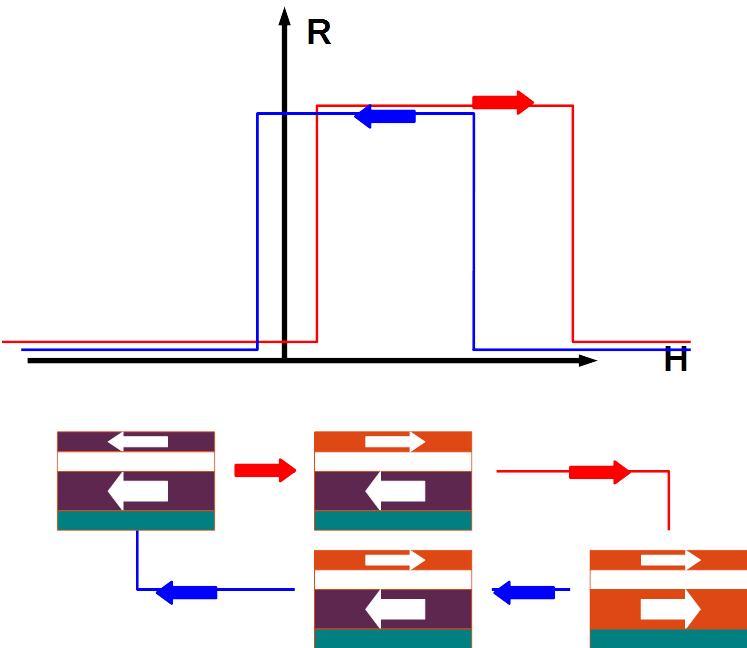
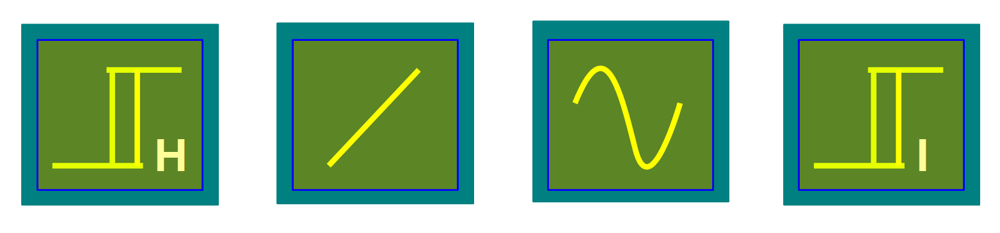
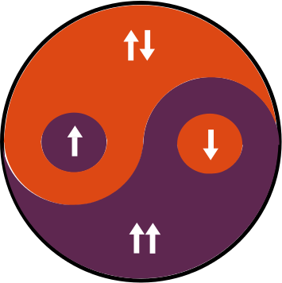

spintronics
Created Sunday 21 September 2014
- Page constructed?

Due to the different coercivities for the ferromagnetic layers the reversal of the magnetization occurs at varying fields. This results in a window of the field where the magnetizations are aligned anti-parallel to each other leading to higher resistance state compared to the parallel aligned configuration where the resistance is lower. this resistance contrasts is termed magnetoresistance. Since the observed resistance was higher than the anisotropic magnetoresistance observed in ferromagnetic thin films, it is termed giant magnetoresistance (GMR).
Reason for the high resistance anti-parallel and low resistance parallel configurations: Two channel model:
There are two contributions to magneto resistance: spin polarization of charge carrier in the ferromagnetic electrodes α and magnetic geometry.
- Spin Polarization: Due to exchange interaction induced spin-splitting of the localized d orbitals, there is asymmetric filling of the d bands leading to local magnetization. The delocalised s bands undergo scattering to occupy d-orbitals. Due to absence of empty d orbitals of one spin, it leads to less scattering of s band with that spin compared to that with opposite spin. This leads asymmetry in the conductivities of the spin polarized s bands. This is reflected in the spin polarization of the transport.
- Magnetic Geometry: There are two possible magnetic configurations;in the parallel configuration, the magnetizations are aligned parallel; say up magnetized. Assuming absence of spin-flip scattering, the up-spin polarized s electrons do not have d states to scatter into in both the electrodes. Hence they have higher conductivity. In contrast the downspin polarized s electrons have partially filled d bands to scatter into in both the electrodes leading to lower conductivity. In the absence of spin flip scattering , the channels can be thought of as in parallel leading to shunting effect by the higher conductivity channel. In the ant-parallel configuration, the magnetizations are aligned anti-parallel wherein both the conduction channels experience preferential scattering in either of the electrodes leading to moderate conductivities. This leads to lower conductivity for the two channel anti-parallel configuration compared to the parallel configuration. This resistance contrast is termed the magneto-resistance effect.
Applications:
GMR devices can be used as:
- In the parallel axes configuration where the easy axes of uniaxial anisotropy induced FM layers are parallel leads to bistable switching, this is useful for memory applications.
- In the crossed axes configuration where the easy axes of uniaxial anisotropy induced FM layers are perpendicular lead to linear variation of the MR with applied field, this is useful for sensor applications.
- In presence of applied pinning field, the free layer magnetization can be made to precess about the equilibrium due to spin transfer torque. this leads to auto-oscillator effect which is useful in resonator applications.
- In the presence of current density, the spin angular momentum in the spin polarized current can be transferred to magnetization of the free layer leading current induced magnetization reversal, this is useful for memory applications without movable mechanical parts.

This can be compared to the yin-yang concept of Buddhism as shown below

Backlinks: spintronics:Concepts:Spin Hall effect induced Spin Transfer Torque